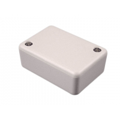

Project template containing the recommended board layout for Hammond Manufacturing 1551M:
Translucent - Blue: 1551NTBU - HM1135-ND
Gray: 1551NGY - HM1126-ND
Gray: 1551NFLGY - HM3448-ND
Black: 1551NFLBK - HM1057-ND
Black: 1551NBK - HM910-ND
Translucent - Blue: 1551MTBU - HM1136-ND
Gray: 1551MGY - HM1127-ND
Gray: 1551MFLGY - HM1785-ND
Black: 1551MFLBK - HM1058-ND
Black: 1551MBK - HM993-ND
|  |
|
The "Dwgs.User" layer contains all critical dimmensions in milimeters[inches].
The "Edge.Cuts" layer contains the maximum board outline and holes to align with board standoffs.
PCB Preview: